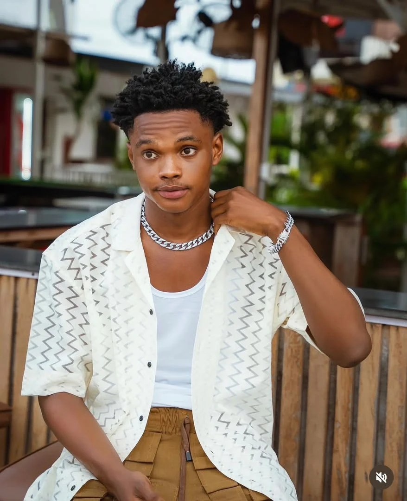

DEZNY’s journey from school performances to AMVCA

Digital content creator Destiny Osarewinda, known as DEZNY, has been nominated for Best Digital Content Creator at the 2026 Africa Magic Viewers’ Choice Awards. The recognition follows years of developing work for online audiences, where he has built a following of more than two million across social media platforms.
DEZNY’s interest in performance began with church and school productions. Since around 2015, he has taken on different parts of content production, including writing, filming and editing. During secondary school, he established YEC TV to give young people opportunities to explore acting, music and dance. The initiative also gave him experience organising creative activities and collaborating with performers.
He later expanded his work to YouTube and other social platforms, developing stories around relatable situations. One example is Marriage List, which took more than a month of preparation before filming. DEZNY wrote the story in full and researched cultural elements featured in it, including Umu’Ada and traditional beads, asking questions to learn about practices he did not know well.
His creative interests also include music: he plays instruments and has taken part in choirs. Those experiences have informed his use of rhythm and emotional expression in storytelling. His background also includes military school training.
The nomination reflects growing recognition of digital creators in African entertainment. Social platforms have enabled independent storytellers to reach audiences beyond conventional film and television. For DEZNY, the recognition follows a gradual progression from early performances and youth-focused creative work to a substantial online audience, built through continued production and experimentation.
Source: Punch